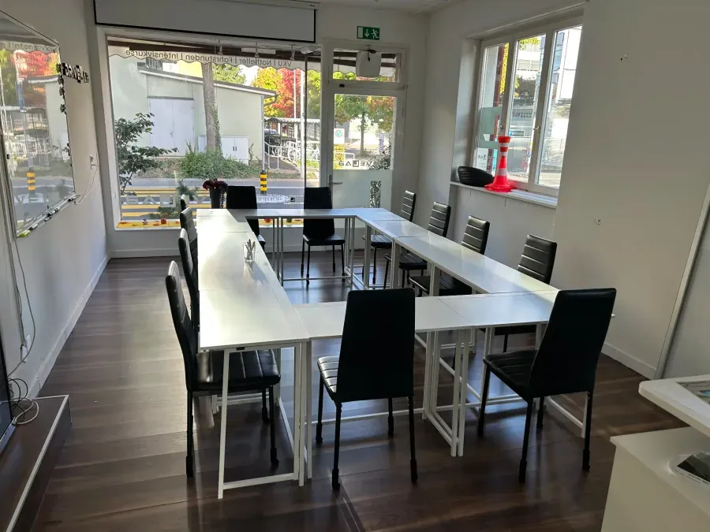

Verkehrskunde · Kanton Zug
Der obligatorische VKU, 8 Stunden an zwei Abenden. Du steigst aus, läufst neun Minuten und bist da — Industriestrasse 50.

Alles verbindlich im Buchungssystem — hier steht, was feststeht.
| Position | Wert |
|---|---|
| Preis, all inclusive | CHF 230 |
| Dauer | 8 Std. · 2 Abende |
| Zeit | 18:00 – 22:00 |
| Kategorien | A1 · A · B1 · B |
| Stornofrist | 48 Std. kostenlos |
| Parkhaus | GIBZ, gegenüber |
Jedes Modul zwei Stunden, mit Pause.
Blickführung, Sichtweiten, tote Winkel — Gefahren erkennen, bevor es eng wird.
Strasse, Wetter, Tageszeit und die anderen als ein System lesen.
Geschwindigkeit, Abstand, Bremsweg — Abstände einschätzen statt raten.
Vorausschauend entscheiden und Reserven behalten.
Der Kursraum an der Industriestrasse 50 — eigene Aufnahmen, keine Bildagentur.


